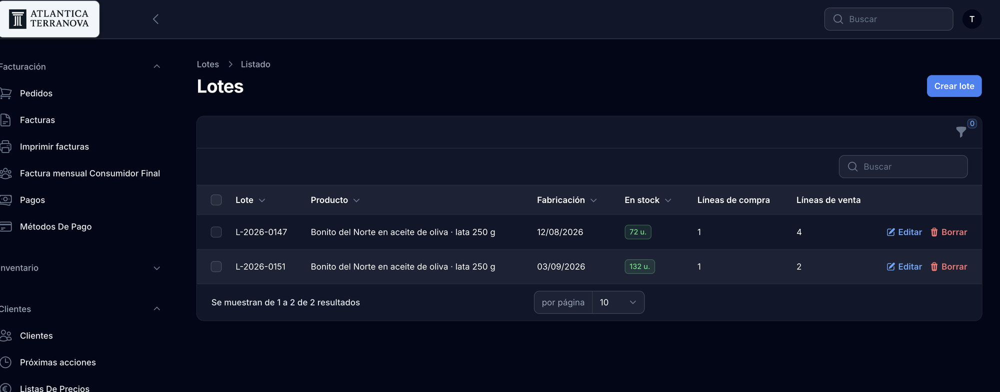
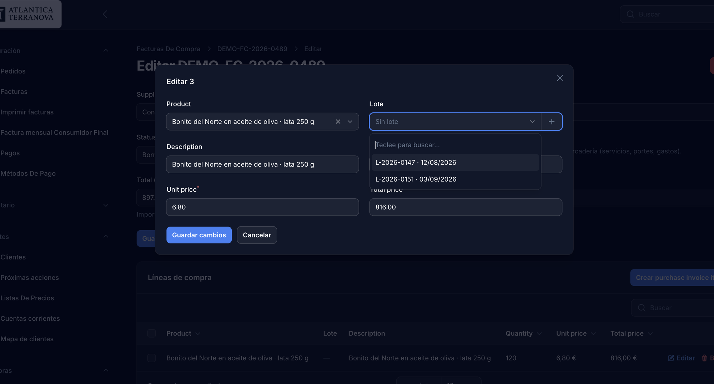
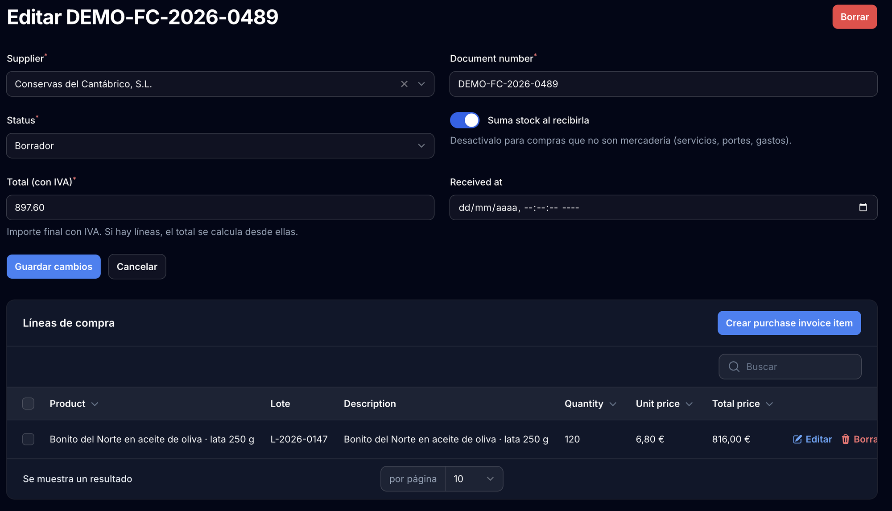
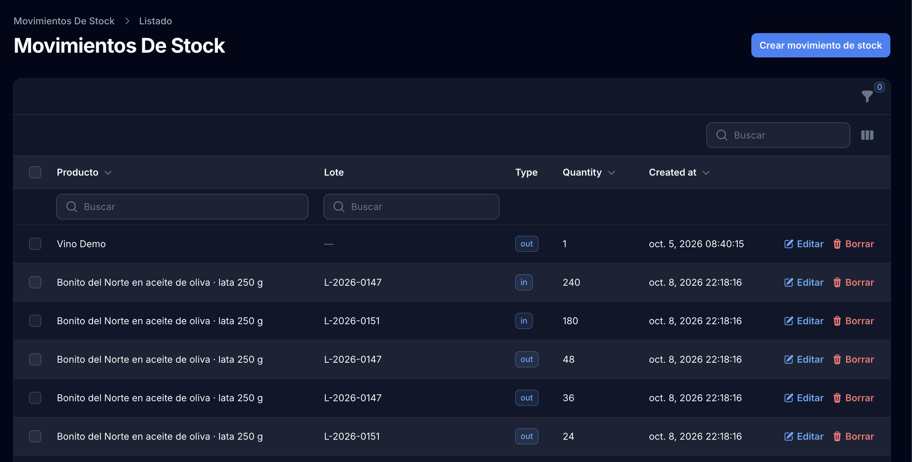
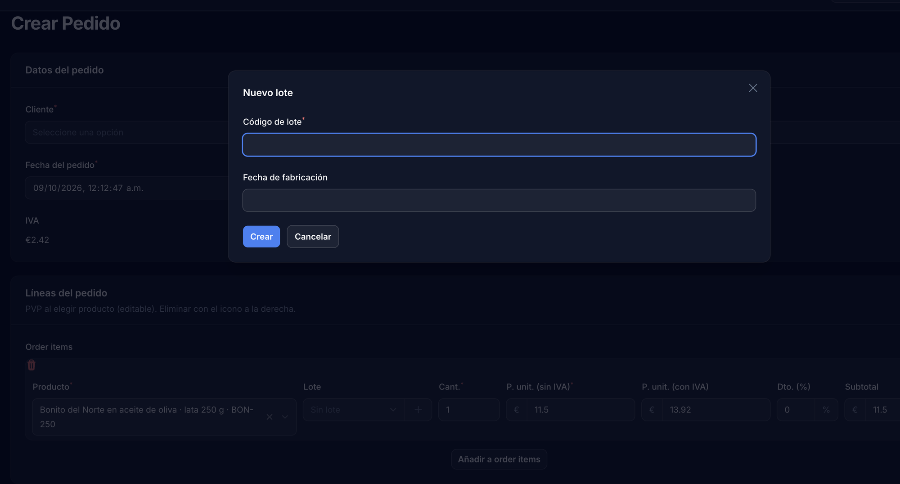
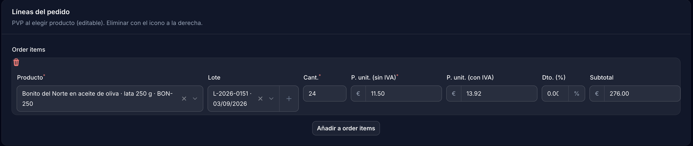
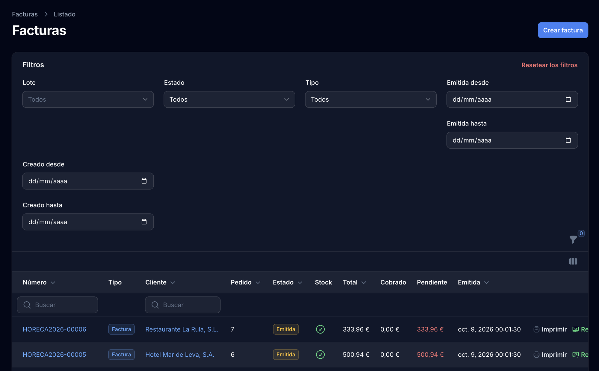
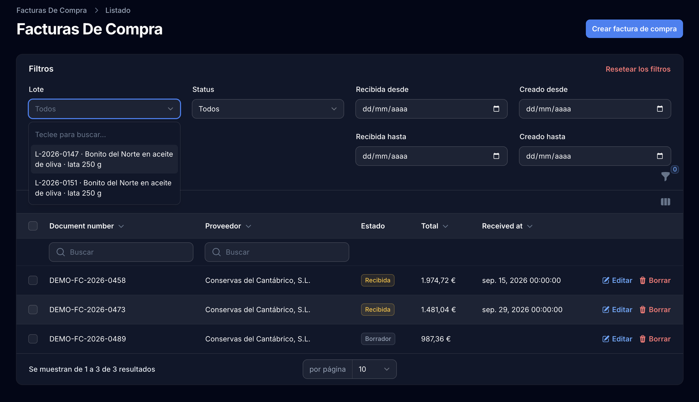
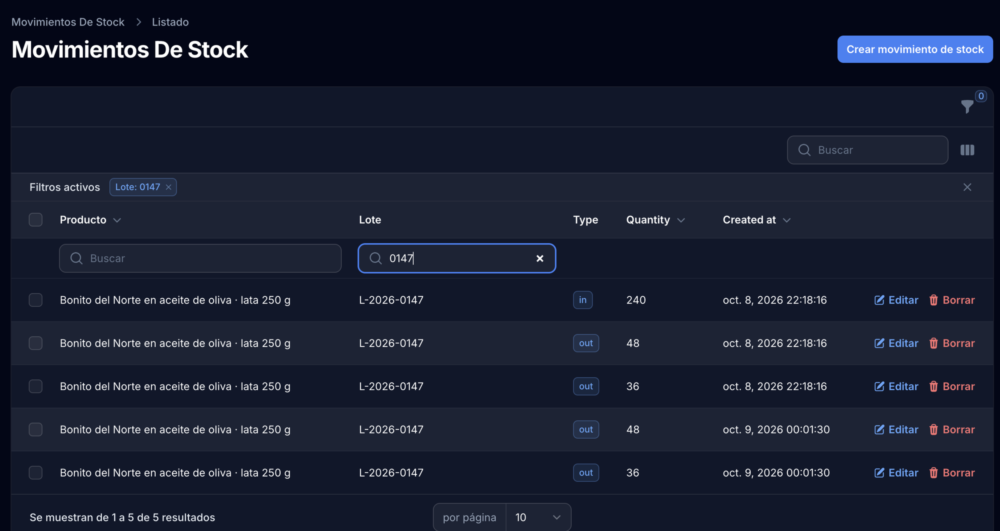

Este documento describe cómo el sistema de gestión de Atlántica Terranova registra y conserva el número de lote de cada producto a lo largo de todo su recorrido: desde la recepción de la mercancía del proveedor hasta la entrega al cliente final.
El objetivo es acreditar que, ante cualquier incidencia sanitaria, la empresa puede identificar de forma inmediata:
En cada uno de estos cinco pasos el lote queda grabado en la base de datos como un dato estructurado, no como un texto libre: el sistema impide que dos lotes distintos del mismo producto compartan código, y conserva el vínculo aunque el documento se modifique o se anule.
| Producto | Bonito del Norte en aceite de oliva · lata 250 g (ref. BON-250) |
|---|---|
| Lote analizado | L-2026-0147 — fabricado el 12/08/2026 |
| Proveedor | Conservas del Cantábrico, S.L. — N.I.F. B39284710 |
| Entrada | 240 unidades · factura de compra DEMO-FC-2026-0458 · recibida el 15/09/2026 |
| Salidas | 168 unidades en 4 entregas, repartidas entre 2 clientes |
| Saldo en almacén | 72 unidades |
Para demostrar que el sistema distingue lotes y no los agrupa, el caso incluye un
segundo lote del mismo producto, L-2026-0151 (fabricado el 03/09/2026), con sus
propias entradas y salidas: 180 unidades recibidas, 48 entregadas y 132 en almacén. Las
consultas de los apartados 7 y 8 muestran que el sistema separa correctamente uno de otro.
El sistema mantiene un registro central de lotes. Cada lote pertenece a un producto concreto y su código es único dentro de ese producto, de modo que un error de transcripción no puede generar un lote duplicado o fantasma.
El catálogo muestra, para cada lote, las unidades que permanecen en almacén y el número de documentos de compra y de venta en los que ha intervenido. El saldo no es un contador independiente: se calcula en cada consulta a partir del registro de movimientos de almacén, por lo que no puede desincronizarse del historial documental.

El lote se introduce al registrar la factura del proveedor, línea a línea. El desplegable solo ofrece lotes del producto seleccionado en esa misma línea, junto con su fecha de fabricación, y permite dar de alta un lote nuevo sin abandonar el formulario.


L-2026-0147 junto a la cantidad recibida. En la cabecera,
el interruptor «Suma stock al recibirla» permite excluir del almacén las compras que no son
mercancía (portes, servicios, gastos).
Al marcar la factura de compra como Recibida, el sistema da entrada automática a la mercancía y genera un movimiento de almacén por cada línea, conservando el lote. A partir de ese momento las líneas quedan bloqueadas: no se pueden alterar cantidades ni lotes sin revertir previamente la recepción, lo que impide que el registro de almacén quede sin respaldo documental.

Al preparar un pedido se indica de qué lote concreto se sirve cada línea. Ese dato se traslada automáticamente al albarán de entrega y a la factura, y se conserva igualmente en las devoluciones: una factura rectificativa hereda el lote de la línea original.


L-2026-0151 y a la cantidad servida. Este es el dato que viaja al albarán y a la
factura del cliente.
factura-con-lote.pdf y albaran-con-lote.pdf, correspondientes a una
misma expedición. Son los mismos documentos que recibe el cliente, de modo que el lote viaja
físicamente con la mercancía.
Es la consulta crítica ante una alerta sanitaria. El listado de facturas incorpora un filtro Lote que devuelve, de forma inmediata, todas las facturas y todos los clientes que han recibido producto de ese lote concreto.

L-2026-0147 y 2 para
L-2026-0151, el mismo recuento que refleja la columna «Líneas de venta» del
catálogo (capt. 1).
El mismo filtro existe en el listado de facturas de compra, lo que permite identificar al proveedor y el documento de entrada de cualquier lote presente en almacén o ya distribuido.

L-2026-0147
queda identificada su factura de entrada, DEMO-FC-2026-0458, con el proveedor y
la fecha de recepción. Se aprecia también el estado de cada compra: las recibidas ya han
movido stock; la que está en borrador, todavía no.
Todos los movimientos de entrada y salida quedan registrados de forma permanente y asociados a su lote. El historial es acumulativo: las correcciones no borran movimientos, sino que generan movimientos compensatorios, de forma que el registro refleja siempre lo que realmente ocurrió.

L-2026-0147. Con el filtro
aplicado: la entrada de 240 unidades y las 4 salidas (48, 36, 48 y 36) que suman las 168
entregadas. La diferencia, 72 unidades, es el saldo que figura en el catálogo (capt. 1).
| Recorrido completo del lote L-2026-0147 | |||
|---|---|---|---|
| Movimiento | Documento | Contraparte | Unidades |
| Entrada | DEMO-FC-2026-0458 | Conservas del Cantábrico, S.L. | +240 |
| Salida | HORECA2026-00001 | Restaurante La Rula, S.L. | −48 |
| Salida | HORECA2026-00002 | Hotel Mar de Leva, S.A. | −36 |
| Salida | HORECA2026-00004 | Restaurante La Rula, S.L. | −48 |
| Salida | HORECA2026-00005 | Hotel Mar de Leva, S.A. | −36 |
| Saldo en almacén | 72 | ||
Para que la exposición sea precisa, se detalla qué está operativo y qué está previsto incorporar:
| Capacidad | Estado |
|---|---|
| Registro del lote en la entrada de mercancía (factura de compra) | Operativo |
| Entrada automática en almacén identificada por lote | Operativo |
| Registro del lote en pedido, albarán y factura de venta | Operativo |
| Impresión del lote en los documentos entregados al cliente | Operativo |
| Conservación del lote en devoluciones y facturas rectificativas | Operativo |
| Consulta «a quién se entregó el lote X» (hacia adelante) | Operativo |
| Consulta «de qué proveedor procede el lote X» (hacia atrás) | Operativo |
| Saldo por lote consultable en pantalla (unidades en almacén) | Operativo |
| Historial permanente de movimientos por lote | Operativo |
| Aviso automático al servir un lote agotado | Previsto |
| Control de fecha de caducidad y alertas de vencimiento | Previsto — el sistema ya registra la fecha de fabricación |
Las dos capacidades marcadas como «previstas» no afectan a la trazabilidad exigible: son automatismos de aviso sobre información que el sistema ya registra y conserva íntegramente. El circuito de identificación de origen y destino de cada lote, así como el saldo en almacén, está operativo en su totalidad.